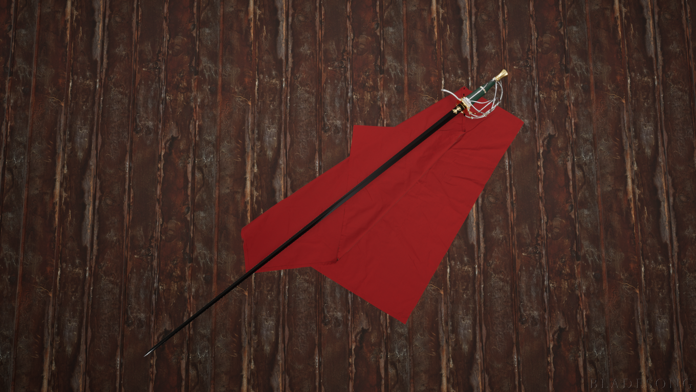
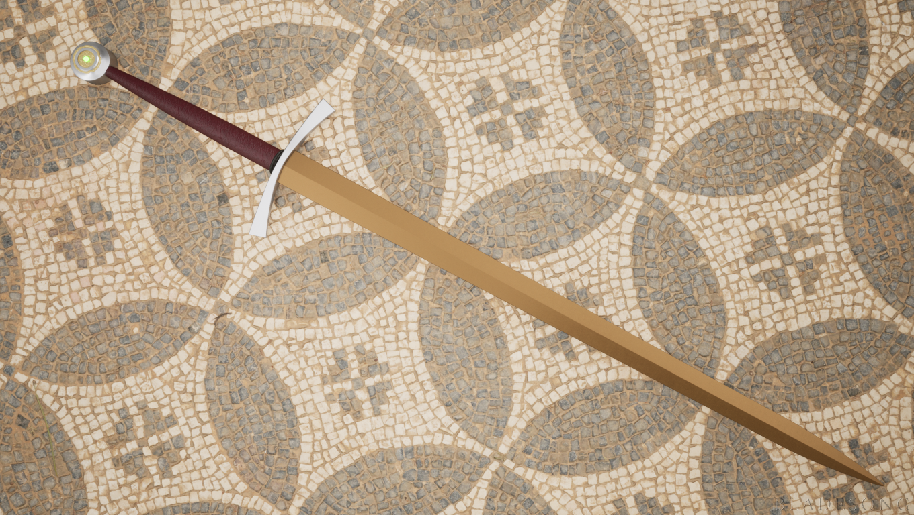
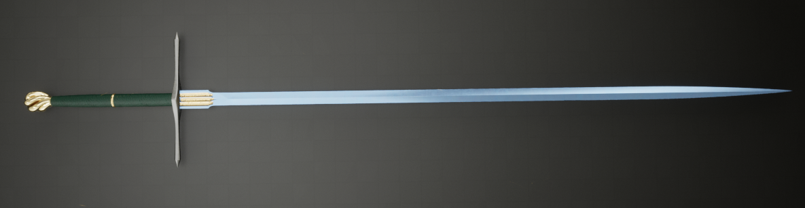
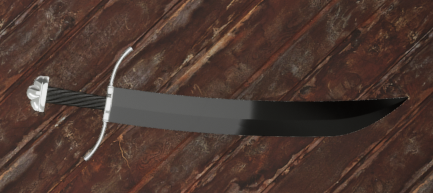
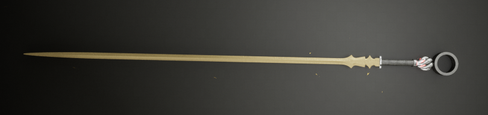
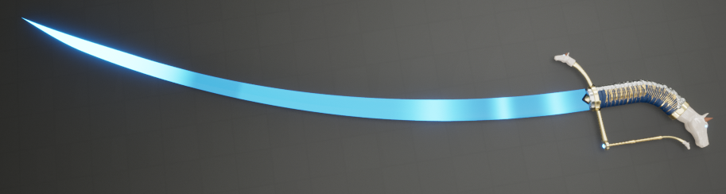
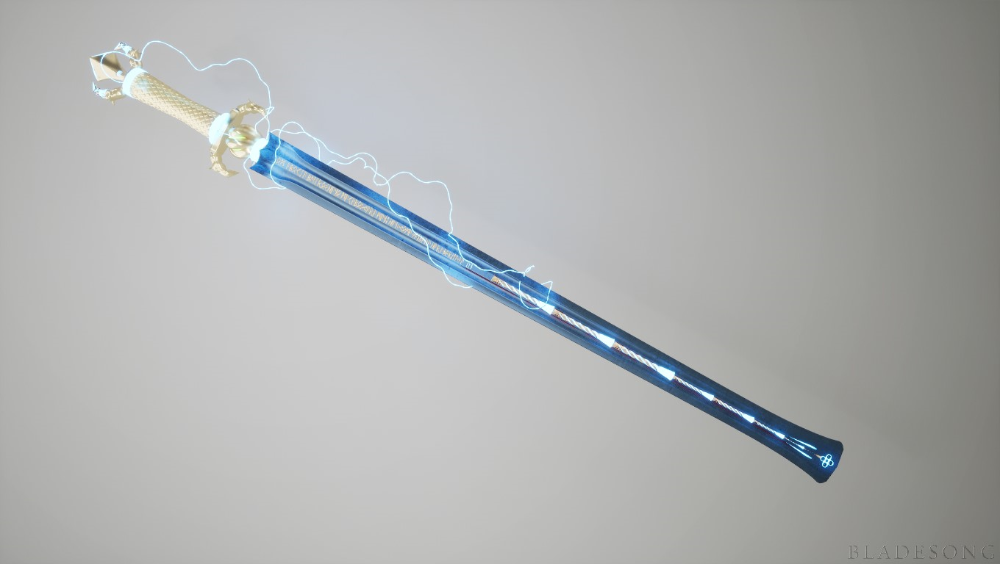

Created Tuesday 30 January 2018
Mithral note: Thrown for finesse, longer reach for non-finesse
Coat of the Elder
The sunstorm crown
can't be charmed or frightened
Resistance to Nonmagical BPS
Fire shield without components recharge on 6 or on dawn
Nonmagical flames extinguished within 20ft
All tool sets can be purchased with +1/+2/+3 enchantments
Devoid of all context
Gungnir
Dappled Staff
This spalted wood staff has a +2 bonus to attack and damage rolls made with it, and grants +2 on spell attacks and spell save DCs for spells cast with it. It has ten charges and recharges 1d8+2 charges daily at Dusk.
Weapon: While holding the staff, you can expend one charge to turn it into a greatsword or a longsword for 1 minute, until you end the effect as a bonus action or until you are disarmed.
Bedazzle: While attuned to the staff, so long as the staff is within two miles of you, you can spend three charges to make it glow with extremely bright and colorful light. This light can be seen from up to a mile away in daylight or ten miles at night. Creatures who look directly at the staff on their turn must succeed on a wisdom save that matches your spell save or be blinded. The creature can reroll their save at the end of each of their turns, ending the effect on a success. This effect lasts for one minute or until you end it as a bonus action
Spells: you can expend charges to cast any of the following spells as an action, using your spell save DC and modifier appropriately.
2 charges: Locate object, Nystul's Magic Aura
3 charges: Haste
4 Charges: Freedom of Movement
5 Charges: Scrying
7 Charges: Prismatic spray
Separation Beads
This set of green transluscent prayer beads reaches out to attack those you deem unworthy. The weapon has 6 charges, regaining 1d4+2 daily at dawn. When you go to make an attack, you can spend one charge to extend the reach of this weapon by 10ft for the attack. If you hit, the target makes a strength save versus your attack roll, becoming grappled on a save. The target can use its action to attempt to free itself by making a strength save versus the original attack roll.
Staff of Mass Summons
When you cast a spell that summons any number of creatures, you summon that number of creatures plus half that number of creatures rounded down instead.
Hat of Rakish Audacity
Gloves of Infinite blades
"Revilo's Stormslicer":
Once per long rest, you can make a special melee attack using the razor sharp winds themselves. On successful hit, every creature within a 15' cone must make a DC 18 DEX save. On a failed save, the creature takes 4d8 magical slashing damage.

Weapon of the Flower of Battle

Sword of the Grand Master

Sword of the Noble Guardian
Rapier of True Stepping
Occam's Greatclub
Goatrider Lochaber
Cold Winter
Bitter Winter
Colloidal silver
Wooden Scarab
Mother of Pearl of Power
Dynamic weapon of the Honest Eye
Maki Kawiki, the many that break (okabutowari (warhammer)) +2 Unique
Requires Attunement. 1hr for the magic to seep into your blood.
You gain a +2 Bonus to Attack and damage rolls made with this weapon. It also has the following additional properties
While carrying Maki Kawiki you gain a +2 bonus to initiative rolls. Enemies Cannot deal extra damage on Critical hits against you. You cannot be surprised. You have advantage on Dex Saving throws. On a critical hit, Maki Kawiki Charms the target for a minute or until the target takes further damage.
Once a day, as reaction, if you fail an attack roll, you can choose to succeed instead, treating the hit as if it were critical. Once attuned, you always know the direction and distance to Maki Kawiki, as well as the fastest route to it.
Maki Kawiki is a sentient Neutral Evil Weapon with 17 intelligence, 10 Wisdom, and 15 charisma. It only communicates through flashes of emotion. It has normal senses out to 30ft. Unfortunately, Maki Kawiki fills the wielder's head with dreams of grandeur, causing them to require 10hrs to complete a long rest.
Maki Kawiki is an often distracted weapon, frequently not paying attention to what's happening. This is because it is lost in its visions of the future. It is certain that its weilder will play some part in great event foretold in the whispers of Lava Flows and in the thrumming of shadows. It will seek to guide these actions as best it can. Its goals are unknown to you.
Riot
This top weighted club vents the wielder's determination as force. When you hit with this weapon up to two creatures or objects within five feet of you must make a strength saving throw against the attack roll or get pushed a number of feet equal to 2x your level on a failed saving throw. If the creature is smaller than you, the number of feet is 5x your level and if they are larger, they are only pushed a number of feet equal to your level.
Lakewaker
Complicator Greatclub
Tactical shovel
Snaptether Javelin
Hammer of Ash and Iron
Clapper Mace
Stubborn Staff
Lohar of the Witch Lords
- You can speak with all beasts that have a language if you can't already and can communicate simple ideas to beasts without a language.
- You can read, write, and speak any two languages of your choice. You can spend 1 minute chanting to change one of the languages to another one. You can also gain telepathy with a range of 30ft but can only use it to communicate with creatures that also have telepathy
- You can use your action to expend a charge and choose one of the following Pristine Gifts for an hour or until you end the effect as a bonus action.
Volcano: You gain immunity to fire damage, and you are capable of walking or swimming in Lava(Or magma) as you choose. If you choose to swim, you treat the lava as though it were water, though it is unable to enter your body. You are able to breathe otherwise toxic air and suffer no ill effects from airborne particulate. You suffer no ill effects from the heat.
Dew: You gain immunity to bludgeoning damage, You can breathe underwater or walk on the water's surface or bottom as you choose. You gain a swim speed equal to twice your walking speed, suffer no ill effects from pressure.
Glacier: You gain Immunity to cold Damage and suffer no ill effects from the cold. You cannot slip, trip, or fall unless you choose to. You are able to walk up vertical surfaces even if they are slippery, keeping your hands free, if you have them. You can walk on top of snow and ice without sinking. You are capable of seeing through extremely bright light clearly.
Breeze: You gain immunity to thunder damage and the deafened condition. You gain a fly speed equal to your own speed. You can clearly hear even very subtle and quiet sounds within a mile and are able to make out what they are. You can also be heard by any creature within a mile when you speak, as though you were nearby.
Flow: You Gain immunity to lightning damage, You cannot be grappled, restrained, and are immune to any condition that would incapacitate you except unconsciousness.
Maw: You gain immunity to acid, piercing, poison, the poisoned condition and any diseases. You do not need to breathe and you can see normally in nonmagical darkness. You can shrink yourself to 1/16 of your normal size (half the size of a normal tiny creature). If you are inside of a creature when this feature ends and cannot expand back to your normal size, you harmlessly ooze out through their organs and skin until you are capable of reforming.
Everafter: You gain immunity to necrotic damage and you can't be frightened or cursed. Your hit point maximum cannot be reduced below its maximum. You can see the souls and animating forces of creatures nearby and you can cast speak with dead at will. If you die while you are under the effects of this gift, the gift lasts indefinitely, your body is placed under the effects of gentle repose and you are able to exist as a visible but ethereal spirit. You can talk and sense the world around you but you cannot be more than 30ft from your body, nor can you interact with the world around you. During this time you cannot pass through objects and treat the world as if it was solid unless it would separate you from your body, at which point you are teleported to your body. If your body is destroyed, you die.
Guard spear
Better Fists
Selfthrower Crossbow
Shame
Shame always feels heavier in the hand than it actually is. It is steeped in all of the emotions that drive the shadowfell. Deadening, quiet emotions that drain the life from the person experiencing it. It is a thick Copper spike, mottled with green and turquoise rust. Its barrel is a simple round piece of gold and its shaft is made of bone. The flights are massive white feathers which glisten in sunlight or whenever someone nearby is praying. The dart seems immutable and that is because of the three types of magic that pour from it. The feathers are the feathers of an angel, struck down when it tried to slaughter the people who hid in the underdark, an angel who held onto the idea of blind righteousness. The bone is, unsurprisingly, one of the ones used in the sealing ritual to bind Teruna to the plane. It is not perfectly straight but that does not seem to change the dart's arc. The third magic is the magic woven by the dart's sordid history. Time and Time again, coincidence after coincidence, the same dart was used to betray one person in order to save others. Like the angel, every person believed they were doing the right thing, the thing they needed to do to save more people. Nearly every time, the person betrayed would have forgiven them. Nearly every time, the bond between the person who was killed and who did the killing was strong. Very few who had to perform such an act were ever able to recover. The strong, mournful and lacrimose magic that settled on this dart grew ever stronger, perfectly arranged, small layers every time over thousands of years. Shame is *just* a magical dart, forged with magefire and wielded by those with strong arms, it has no preference or protections for its use, though the magic upon it makes it very tiring to weild. Any creature that attempts to attune shame must make a DC16 Constitution saving throw or suffer the effects a random condition for one day, during which time they are unable to look at the dart, Only the effects of the spells Greater Restoration, Wish, or Calm Emotions can allieviate this effect, as the creature is simply reliving their worst memory, twisted by the magic to be much more painful than it probably was, causing the creature to manifest myriad symptoms, even tapping into magic to do so.
Random Properties. Shame has the following random properties:
1 Major Detrimental property
1 Minor Beneficial Property
2 Major beneficial properties
Angelic Weapon. Attacks made with Shame deal an additional 4d8 radiant damage.
Unavoidable consequence. When making an an attack with shame, Roll an additional D20 and take the highest result rolled. As a bonus action you can recall Shame, teleporting it to your hand. If you are separated from shame for more than a day, it reappears nearby you at the end of your next long rest.
Regret. A creature that has attuned to this dart and killed or petrified at least one creature with it cannot achieve an afterlife until the dart is destroyed or that creature released from petrification. It remains bound as an incorporeal and deeply mournful spirit, unable to do anything but feel emotional pain from what it has done. This creature may manifest as a ghost-like image but is unhelpful and nearly impossible to communicate with.
Destroying Shame. It doesn't take much to destroy shame ostensibly, though it is difficult. A creatue that is attuned to Shame may attempt to reconcile all of the guilt that binds the magic together. A single DC 10 Wisdom saving throw, a single DC16 Constitution save, and a Single DC 23 Charisma save is enough to weave the attuned creature's spirit with the will of the creatures previously attuned to Shame and accept the grief, and let go of the past. However, the unwinding magic destroys the person entirely, body, mind, and soul irretrievably, erasing them from existance. A creature cannot benefit from magic to make these saving throws, and any such magic on the creature is dispelled in the process.
Firebow
Gurglethong
Sweet Potater
Mountain Sweeper
When you hit a melee attack with this flail, the opponent must make a strength save against your attack roll or be knocked prone
Annam's Tongue
Tabar of Prowess
Soul Sword
Sapience. The Soul Swords all have the same Neutral evil personality. They drive their weilder to ambition, personal gain, and not infrequent acts of evil. They have an intelligence of 10, A wisdom of 12, and a charisma of 18. It can see normally in darkness, including magical darkness. Not unlike a moonblade, it communicates in emotions, and occasionally in dreams or visions during trances. It is proficient in Deception and persuasion, with a +3 bonus to those rolls. It makes attempts to persuade its weilder to kill things extremely often, often sneaking in intrusive thoughts about how easy such an act would be, and how powerful the weilder is. You cannot willingly unattune to the soul sword but a remove curse spell works
Personality. All the Soul sword wants is to eat the souls of mortals and to attain great power. It's got a very one-track mind. It prefers to corrupt its host but people of sufficient willpower can overpower it and force it to their will.
Random Properties. The Soul sword has the following random properties
- One Minor Beneficial property
- One Major Beneficial Property
- Two Major Detrimental Properties
Will to power. Once you are attuned to the sword, its presence is always on your mind, but the sword has a mind of its own. If the sword is ever taken from you, you remain attuned and cursed by the soul sword. You will also always be reminded of what terrible things that sword can do when it is not in your posession, where it is ostensibly safe and better cared for.
Shapeshifting. The Soul sword is capable of changing its shape into any melee weapon, changing to the best fit for the weilder upon attunement.
Malpresence. While attuned to the sword, if the sword has consumed over 100 souls while in your posession. You transform into a monster. Your highest stat increases by 4 and your maximum for that stat increases by 4 permanently. Your second highest stat increases by 2 and your maximum for that stat increases by 2 as well. Your alignment becomes some flavour of evil, justify that however you want, as you are filled with strong emotions that drive you to kill and devour those who oppose you. Creatures you kill resurrect as undead versions of themselves in 1d10 days and follow you in service of the soul sword. You cannot be disarmed, nor can you ever willingly relinquish control of the sword. While attuned to the sword you gain your choice of either:
- A Fly speed of 30ft or 30ft added to your flying speed
- Regeneration of 10hp at the start of your turn while you are conscious
- A +3 bonus to AC
- The appearance of a mouth somewhere on your body that grants you an bite attack that you can use as a bonus action
- Advantage on perception checks made to see, and the ability to see normally in darkness, including magical darkness.
Destroying a Soul Sword. The only way to destroy the soul sword is to break it apart with an artifact of similar power. The shards of the sword in this state are still capable of absorbing souls and cursing living and undead creatures with a will to find the other shards. A greater restoration spell cast on the sword or on its shards frees the souls bound within it, and a wish or imprisonment spell can lock the sword away until dispelled.
Guard's Halberd
Lance of Angels
A Good sword
Ringer of the deep
Exploder
- Tiny: 1
- Small: 1d6
- Medium: 2d6
- Large: 4d6
- Huge: 8d6
- Gargantuan: 16d6
Necrospike
Cullercut
Goatrider Jumonjiyari
Greatrune Pick
Forcehammer
- As an action you can cause a rift to open in a large body of water, oil, lava, or similar liquid up to a mile deep, two miles long, and 20ft wide. This rift lasts for 4 hours or until you close it as an action. If this rift reaches the bottom of the body of liquid, the ground underneath is dried, cooled, and safe to walk on.
- You can also use your action to put out nonmagical fire up to a mile wide. If a fire is magical, as part of the action you can make make a Charisma check with your proficiency bonus against the caster's spell save DC. If you win the roll, the fire goes out.
- You can use an action to stop the wind within a 1 mile radius of your for 1 hour or until you end this effect as an action
- You can use an action to quiet all sounds within 1 mile of you. The sounds are not inaudible but are instead a third of what they were
- You can use an action to slow an earthquake, Volcanic eruption, or similar tectonic event. Within a mile, the effects of an earthquake are converted to an extremely high pitched hum and Volcanic flows become effusive with very little debris or pyroclastic flow.
Plunderer's Whip
Overblow
Simple Magic Crossbow
Even Spreader Net
Dimensional Slide Abacus
Nistleburr Wand
Spruigia Staff (Requires attunement)
Adder Stone
Neverwood Staff
Vilified Soulflower Wand
Quickdraw Scabbard
Crazy balls
Studley Component Chest
This masterfully crafted and well layed out wooden box contains only the finest of components and Magical sources of some. With self-refilling vials and magically constructed facsimiles of specific items, This component chest provides you with effective (but otherwise of minimal worth) replacements for costly material components. You can use your component chest to cast spells with Material components that have a specific cost of 100gp or less. If the component has a specified value and is consumed by the spell, the component pouch can reconstruct the facsimile for it over the course of three days, during that time, you cannot use the chest to recast the spell (unless you have a backup of that component)
Defiler Falx,
Aulufeydth Lamellar
Green Knight Spear
Magic Sheep
Bloodthorn

Hand of the Clockwork Castle
You gain a +3 bonus to attack and damage rolls made with this magic weapon. When you hit an Abberation or Monstrosity with this weapon, it deals an extra 2d10 Lightning damage, ignoring resistances and immunities. While you hold the drawn sword, it creates an aura in a 10-foot radius around you. You and all creatures you consider yourself allied with in the aura have advantage on saving throws against spells and other magical effects. If you have 17 or more levels in the paladin class, the radius of the aura increases to 30 feet. If you have 17 or more levels in the warlock class, you gain immunity to damage from abberations and resistance to damage from monstrosities.

Obelisk of the unburied
In the shadowfell, Obelisks of the unburied are built by the waiting souls of people who died without burial rites and who particularly expect them. These Obelisks serve as seeds for the empty graveyards that spread over the plane, attracting like-minded souls who get stuck waiting. Getting a hold of one of these obelisks is the easiest way to gather ghosts from the surrounding lands, as all who are left with unfinished business are drawn to their eventual grave, graves they might never have. Such an obelisks will attract a number of ghosts per week(1d10-6). The ghosts have to be dealt with individually, but proper burial rites must be administered to the obelisk for it to lose its magic. The obelisk often gives clues for what culture it belongs to and what rites it expects. If the rites cannot be performed, the obelisk continues to grow. The Usual religion check required is DC 15, though some are more difficult, some are less.
Crowncast, The Blue Blade
One of the greatest hexblades ever drawn from the fires of the hexforge, Crowncast takes the shape of a light blue bladed Kastane saber, with extremely precise ornamentation for the hilt depicting a snarling tiger wrought of white jade with rubies for eyes. It was made by a warrior of the Grao for the purposes of fighting sea monsters, and it is difficult to resist the call for self-sacrifice when it decides it is time for you to fight.
You gain a +3 bonus to attack and damage rolls. It also has the following additional properties
Sentience. Crowncast is a sentient Lawful Good object with an intelligence of 10, wisdom of 13, and Charisma of 18. It has blindsight to a range of 100ft. Crowncast has a fly speed of 10ft, but only uses it to get closer to its wielder.
Personality. Crowncast can speak and is quite verbal. It can read common but does not care to. It has a vicious and single minded personality, when there is danger it will aid its wielder in fighting, but in exchange, that wielder must take on the challenges that no one else can. In Particular the sword bears great hatred for gargantuan creatures unless they are extremely pro-social. Any monstrosity or abberation in particular will have a difficult time slaking its ire. Crowncast speaks irreverently but suavely, and never seems to get into trouble for otherwise crass comments.
Patron. Crowncast acts as a warlock patron, and is sometimes visited by agents of his will as they prove their commitment to hunting monsters and protecting the weak.
Guardian of all. Once between Long rests, by saying the phrase "I am no worm" you and your equipment grow to become gargantuan for up to 10 minutes or until you end this effect as an action. Weapons deal four times their base damage (a longsword that deals 1d8 will deal 4d8, a greatsword that deals 2d6 will deal 16d6), you can carry sixteen times your normal limit, your reach multiplies by 4. When this effect ends, you gain one level of exhaustion. While in this form, skies attempt to clear around you, winds still. Creatures smaller than you have disadvantage on breaking your grapples. If you cannot fit in a space as you transform, you may get stuck.
The Northeast Bolt. Once between long rests, Crowncast can deal an additional 12d6 Lightning damage to a target it strikes.
Warrior of the witnesses. You gain the following abilities.
- Waterbreathing. You can breath under water without difficulty and are immune to immense pressures
- Water walking. You gain the ability to walk on water if you choose. You can activate or deactivate this as a free action on your turn as part of your movement.
- Flight. You gain a fly speed of 60ft (hover)
Destruction. When the last descendant of old Graoton dies, when the children of mirrored lightning no longer bear the mark of what they witnessed, Crowncast will crumble to dust.
A POOR RECREATION?

Goalhennai
Another of the great hexblades, Goalhennai forged itself. Once it was a small fey spirit, but either by curse or a foul twist of fate, its mortal companions met their ends in helplessness. It submitted itself to the dust of cold iron, tempered itself in the saved final tears, tore its own spirit apart and stitched it back together to accomodate the last vestiges of its friends. In the end, it became a very bitter and lonely sword, a jagged strip of metal, pitted, worn, unreasonably sharp, with only a thin strip of faded red cloth to serve as a grip. You gain a +2 bonus to attack and damage rolls with this weapon. It also has the following additional properties.
Rapid Attunement. Attuning to Goalhennai is instantaneous
Sentience. Goalhennai is a Chaotic Neutral object with an intelligence of 8, wisdom of 20, and charisma of 15. It can only percieve through its wielders senses. It has a run speed of 20ft where it sprouts legs in order to be closer to its attuned wielder and can teleport up to 5ft to get through walls. It always knows the direction to its wielder, and can magically discern the fastest physical route to them.
Personality. Goalhennai is deeply distrusting and extremely protective of its wielder. It is incapable of thinking that it is the cause of their distress. It communicates only in subtle feelings of emotion, projected telepathically toward its wielder. It is fearful and does not like going into dangerous situations, and may cause involuntary twitches in the wielder if something seems familiar. It refuses to be friendly towards the powerful, but will tolerate them so long as its chosen wielder is being cared for reasonably. Goalhennai will abandon its wielder, breaking attunement immediately if it purposefully endangers a vulnerable, innocent, and harmless being by its perception. It is an excellentn judge of character in that respect at least. It will then immediately offer to attune to the more vulnerable creature. It trusts its wielder in all other cases, except when they are in danger.
Curse. Goalhennai is cursed, and cannot be unattuned willingly. The first time the wielder is below half health while attuned to Goalhennai, they permanently take on bestial features.
- Fangs. You gain fangs and a bite attack that deal 1d4+strength modifier damage. A target hit with this bite attack is grappled
- Claws. You gain claws and a claw attack that deals 1d6+strength modifier damage. A target hit with this attack needs to make a DC 18 constitution saving throw or be poisoned.
- Spines. You gain boney spines that project through your skin. A creature that touches you directly without thick protection takes one point of damage. Creatures that grapple you take 5 damage when they grapple you and at the start of each of their turns until the grapple ends.
- Tail. You gain a prehensile tail. It is not capable of wielding weapons but is capable of holding objects. You get advantage on checks made to maintain grapples and to maintain your hold on objects you are grasping.
- Scales. You gain protective scales that grant you a +1 bonus to AC while not wearing armour and resistance to piercing and slashing damage.
- Superior Darkvision. You gain darkvision to a range of 120ft. If you already had darkvision, it increases by 90ft
- Ability score adjustment. Your strength score becomes 18, if it is not already higher. Your Dexterity score becomes 18 if it is not already higher.
- Regeneration. You regain 5 hit points at the start of each of your turns, damaged or broken parts of your body repair themselves after 1 hour.
- Speed. Your move speed doubles
- Fear. You have disadvantage against saving throws to avoid being frightened. You are immune to the effects of the spell Calm emotions.
I will protect you. If you die while attuned to Goalhennai, you instead transform into a purple worm (see crowncast) assuming its statblock. As you transform You lose most of your memory and higher function while in this form, cannot recognize friend from foe and use all actions movement and abilities to escape. The Transformation completes over the course of a day, at the end of which you lose all prior racial and class features you had previously. This change is permanent and can only be reversed with the use of a wish spell after deattuning from Goalhennai.
Destruction. Recovering the fragmented souls of Goalhennai's past charges from around various planes of existence will release parts of the sword's power. After recovering all of them and performing the ceremony spell, the sword falls inert,
Silver knight longbow
Silver Knight Yataghan
Queen Silver
One of the longest-wrought items of the hexforge, made with great expense, Queen Silver was part of the royal regalia of Konia. This fluted armour is inlayed with no less then seven different shades of reflective metal, mithril and steel not the least of them. You gain a +3 bonus to AC and all saving throws while attuned to this armor, even if you are not wearing it. It also has the following properties:
Sentience. Queen Silver is a Lawful Neutral object with 14 intelligence, 16 wisdom, and 10 charisma. She has no sight but can hear even small sounds clearly for up to a mile. She can telepathically communicate with any creature within 60ft, and once per day can send a vague telepathic impression for up to a mile to one creature she can hear, usually beckoning them if she believes them worthy or at least opportune to get her closer to a rightful heir.
Personality. Queen Silver is unwaveringly loyal to the King and Kingdom of Konia, and is one of the entities entitled to weigh in on what merits that position. She is uptight, haughty, bitter, and has many opinions about how things should be done. While she will frequently oppose or question the attuned creature, she will never fight against the decision. She will trust the attuned creature beyond all reasonable sense, but is highly mistrustful of others. She wants her attuned creature to be worthy of the throne that she opens the way for, and will work to prepare that creature for the reality.
Selective Antimagic Field. Queen silver is capable of projecting an antimagic field within 5ft of her targetting only effects that she deems deletrious. She can only use this ability twice per day on a reaction.
Spells. Queen Silver is capable of casting the following spells without components or needing to maintain concentration. Spells that are not a reaction are cast at the end of the turn of her attuned creature, as she wishes or is commanded
3/day: Shield, Absorb elements, Shield of faith
1/day: Dispel magic, Remove Curse, Dimension door, Cure Wounds
Crafted. Queen silver is weightless to her attuned creature, never gets dirty or marred, and changes shape to fit.
On your feet. An attuned creature is never surprised, immune to bludgeoning damage (including fall damage), as well as psychic damage. Queen silver can be donned as a reaction upon rolling initiative so long as the attuned creature is on the same plane of existence.
Bracers of inimitable force
One of the items wrought in the hexforge, these bracers amplify one's internal abilities immensely. While attuned to these bracers, when you rage your move speed and jump height and jump distance quadruples. You Regerate 10hp at the start of each of your turns. The extra damage you do with attacks during raging increases by 3. Your rage lasts up to ten minutes.
Violet Mirror
Made by fey bargain within the clockwork castle, violet mirror is one of the great treasures of the old Grao. Taking the shape of an articulated plated gauntlet of dark metal, violet mirror is unremarkable until she is attuned to. While you are attuned to Violet mirror, you cannot fail checks made to climb. She has the following additonal properties
Sentience: Violet Mirror is a sentient object with an intelligence of 4, Wisdom of 20, and charisma of 15. It observes the world through the attuned creature's senses and communicates only in flashes of emotion or in dreams. It is capable of minor prophecy but this is fairly unrelaible.
Personality. Violet Mirror was once a queen of the grao, who gave up her spirit to keep her people safe. While little of her knowledge and cunning is left at all, her desire to see the grao flourish and her immense mercy is quite present.
The Southwest Bolt. Once between long rests, violet mirror can deal an additional 12d6 Lightning damage to a target grappled with it.
Wide Embrace. As part of the attack action or as a reaction while falling, Violet Mirror is capable of launching a cable made of magical silk ending in a bright blue bauble from its palm. This cable is 60ft long and uses gravity magic to stick to creatures and surfaces. A creature trying to detach from Violet mirror must use an action to make a DC 18 Strength check to free themselves. You may retract the cable as a bonus action, pulling yourself closer to whatever you have attached to. If you are attached to a target two sizes smaller than you are, you may pull it to your grip. If you are one size larger than the target, you may make a DC 10 strength(athletics) check to pull it to an unoccupied space within 5ft of you, DC 15 for the same size, DC20 for one size larger. For any creature larger than yourself, you can make a DC15 athletics check to pull yourself to the creature. You may also release whatever you have grappled as an action or bonus action on your turn.
Windweaver
Sapience: Windweaver appears to be sapient, and occasionally acts of its own accord in the form of the help action, granting occasional advantage. This help is rarely consistent, and seems extremely arbitrary. The mind of windweaver is extremely alien, and seems ineffable, even in cases of detect thoughts. It is, strangely, entirely immune to magic cast on it, and can be heard whispering a soft song instead of being affected by its environment. The song does not seem to have a discernable language.
Longhand
Bound to Life. Damage with this weapon cannot kill a creature, regardless of their condition. If you roll a 20 on the attack roll, you cut off one of the creature's heads, limbs, or any body part. The body part continues to function though continuously is in pain. Blood or similar fluids as well as nerve impulses and necessary magic will travel as far as is necessary in order to reach affected parts in order to keep them functional physically moving toward them along the shortest path possible, avoiding obstacles and antimagic fields. A creature can die from hunger, aging, or disease if they are incapable of maintaining their health, but the wounds made by this weapon cannot become infected from exposure.
Destroying Longhand. To destroy longhand, it must be starved for 1698 years, approximately. No creature affected by wounds from longhand, no matter how small, must exist for this entire duration, otherwise the amount of time they have remaining to live gets added to that time, there is no way of knowing this amount.
Mountain Splitter

Call of Endless Life
Sonorous peals. As an action, you may ring the bell which can be heard for over a mile. All undead within 300ft must make a charisma saving throw against your spell save DC with disadvantage. Undead that fail this save are under your control until they cease to exist or until you unattune to the bell. Any living creature that is unconcious within this range suffers one level of exhaustion
Mournful Ring. If you hit a creature with the bell as part of an attack, and that creature dies before the end of your next turn, it rises as a ghost under your control. Any creature that makes a death saving throw during this time makes it with disadvantage
Life Knell. By Ringing the bell in a ritual for an hour, concentrating on the rhythm, you can reconstruct the corpse, spirit, and will of one dead creature that you are familiar with. If that creature is in an afterlife, it is pulled from it and inserted into a healthy, youthful, and living body. You can only use this ability once per month, and recieve five points of exhaustion after using it.
Hostile Deattunement. You may attempt to attune to the call of endless life while another creature is attuned to it. Doing so takes twice as long and deattunes the other creature after the first hour
Strings of the Siren
Reeds of the Horned ones
Mallet of
Tagic Company Items
Workshopping
Stem
ACTUAL
Lithosaad, the Diplomancer's Staff
Dispel Magic
Hold Monster
Flight
Legend Lore
Contact Other Plane
Teleportation Circle
Contingency
Lithosaad Mk.2 Executive (The Refined Diplomancer's staff)
Requires attunement: 3hr filling out the Transfer of ownership forms, and listening to other offers telepathically if the last owner is not still alive on any plane of existence. If the owner is alive, the staff is transfered to their ownership after a breif moment of communication with the extraplanar company that makes lithosaad.
The sleek Lithosaad MK.2e is a +2 staff for the most discerning of Sorcerers and Archmages. It comes prepacked with the following Additional spells That any creature with sufficient spell slot levels can cast but requires no Material components
Cantrip:
Hide/Reveal: Bonus action: Store the staff in an extraplanar space of its own or call the staff forth from wherever it is through said space.
Quiet Prestidigitation: Tapping gently on L2e allows you to perform a nearly unnoticable version of Prestidigitation.
Unseen Servant
Protection from Evil and good
Speak with Dead
Tongues
Counterspell
Dispel Magic
Hold Monster
Flight
Legend Lore
Contact Other Plane
Teleportation Circle
Contingency
Teleport
Mordekainen's Magnificent Mansion
Saad Portal Pro+ makes 5 such entry portals on a reaction, The portals cannot aim at eachother in any cyclical way or the spell will terminate and you will be issued a citation for breach of contract. These portals disappear at the end of your next turn.
Trommogart, Blaster Caster's Companion
Trommogart, Destructive Mage's Tool
Trommogart, Area Annihilator's Focus
Danganaragi, Eater Shields
Gastor Onaar, Infantry lance
Gastor Praesencor, Questor's Lance
Gastor Omarae, Legate's Lance
Margali Truush
- Your Unarmed Damage increases by 1d6
- You make attempts to grapple with advantage
- You do double damage to constructs and inanimate objects
Auto-lock
Magical picks
Headband of Psychic Autonomy
Malathat Robes
While attuned to these robes you gain the following benefits
- You have advantage on any saving throw against an effect that alters the flow of time for you
- If you are placed under the effect of time stop, make an Arcana(intelligence) check against the caster's spell save DC, If you succeed, the spell has no effect for you.
Goamehteh Hammer green
Damagon Tramali 8-Cycle Copper Channel Sepraphinite Rutile Quartz Crystal Orb with Octarinate Runes
Vajra Khanarilan

Dm's Note: Part of the direction I intend to take my part of the prison planes after removing hasbroisms involves encompassing liminality and power scaling beyond what
Workshopping
Abalone, Mother of All pearls
Trezja
Book of Mist(missed) spells Currently in Drakenhearth with frog
Selune's Arbalest (heavy crossbow) On Thunder Island
It continuously whispers, it might take some deciphering to work out what it is saying, as it doesn't seem to repeat itself.
Bonus Action: Sheds Bright light in 10ft radius and dim for add 10ft this can be applied to ammunition shot from it, granting advantage to people trying to hit the target with ranged attacks. BA: to extinguish
The wielder of the Arbalest is also granted Advantage against Lyncanthropes, and Gains Darkvision 60ft as well.
Elder Coat (clothing)
Windweaver (rapier)
Windweaver Allows its wielder to cast Gust and Control Winds At will , Storm sphere and Investiture of Wind Once per day (elemental evil) without expending spell slots
Spell saves caused by spells cast with windweaver increase in difficulty by 1, and any damage caused by windweaver or spells cast with it is also increased by 1 (this includes for the purposes of determining HP for Sleep and similar spells).
Rapier 1d8 piercing, finesse
Nolaehaneun Ssangsoodo In Ganglegrove --Large tree near western edge
Whirlrock (Nodachi)
Condition: after three levels, Whirlrock stops working, if one manages to diagnose the condition, one recieves a Tagic company item
Benriramuda +2 (Maximillian the first's greatsword shape)
Ring of Regeneration
Yazi, Seeker of Destiny -- In the Posession of Xundrin Ry'lendar
Hearing and Darkvision to 120ft
Seeks to destroy the servants of Avandra
It can speak, read, and understand several languages, Telepathic to wielder
16 int, 14 wis, 11 cha,
Once per day, as an action, you commit your mind to A fighting technique known as "the Rain (or Reign) of Steel" During this time you cannot hide, dash, or talk. Any creature that starts its turn Adjacent takes 1 weapon die damage. This effect ends when you sheath the weapon, lose conciousness, are incapacitated or frightened, or are disarmed.
ambu lance
Yokumo Mantle
This fine cape of blue canvas is embroidered with silver threading depicting a triskelion in the form of three waves. It is enchanted with a partial bag of holding ritual. While the outside of the cloak looks normal, the inside is actually several feet deep. The cloak can be used as a shelter for up to three people. It grants +2 to AC while being worn (or wielded) and once every 8 hours, as a reaction, you can force an attack made with a melee weapon or a single-target spell to miss, or an area of effect to be reduced by 5 feet before where you stand.
Weight of the world
Lithosaad (The Refined Diplomancer's staff)
Requires attunement: 3hr filling out the Transfer of ownership forms, and listening to other offers telepathically if the last owner is not still alive on any plane of existence. If the owner is alive, the staff is transfered to their ownership after a breif moment of communication with the extraplanar company that makes lithosaad.
The sleek Lithosaad MK.2e is a +2 staff for the most discerning of Sorcerers and Archmages. It comes prepacked with the following Additional spells That any creature with sufficient spell slot levels can cast but requires no Material components
Cantrip:
Hide/Reveal: Bonus action: Store the staff in an extraplanar space of its own or call the staff forth from wherever it is through said space.
Quiet Prestidigitation: Tapping gently on L2e allows you to perform a nearly unnoticable version of Prestidigitation.
Unseen Servant
Protection from Evil and good
Speak with Dead
Tongues
Counterspell
Dispel Magic
Hold Monster
Flight
Legend Lore
Contact Other Plane
Teleportation Circle
Contingency
Teleport
Mordekainen's Magnificent Mansion
Maki Kawiki, the many that breaks (okabutowari (warhammer)) +2
You gain a +2 Bonus to Attack and damage rolls made with this weapon. It also has the following additional properties
While carrying Maki Kawiki you gain a +2 bonus to initiative rolls. Enemies Cannot deal extra damage on Critical hits against you. You cannot be surprised. You have advantage on Dex Saving throws. On a critical hit, Maki Kawiki Charms the target for a minute or until the target takes further damage.
Once a day, as reaction, if you fail an attack roll, you can choose to succeed instead, treating the hit as if it were critical. Once attuned, you always know the direction and distance to Maki Kawiki, as well as the fastest route to it.
Maki Kawiki is a sentient Neutral Evil Weapon with 17 intelligence, 10 Wisdom, and 15 charisma. It only communicates through flashes of emotion. It has normal senses out to 30ft. Unfortunately, Maki Kawiki fills the wielder's head with dreams of grandeur, causing them to require 10hrs to complete a long rest.
Maki Kawiki is an often distracted weapon, frequently not paying attention to what's happening. This is because it is lost in its visions of the future. It is certain that its weilder will play some part in great event foretold in the whispers of Lava Flows and in the thrumming of shadows. It will seek to guide these actions as best it can. Its goals are unknown to you.
Anti-Devil Broom
Yokumo Mantle (previously, mantle of the broken winds)
Requires attunement, 1 day spent underneath the mantle to adjust to its world-bending properties.
This fine cape of blue canvas is embroidered with silver threading depicting a triskelion in the form of three waves. It is enchanted with a partial bag of holding ritual. While the outside of the cloak looks normal, the inside is actually several feet deep. The cloak can be used as a shelter for up to three people. It grants +2 to AC while being worn (or wielded) and once every 8 hours, as a reaction, you can force an attack made with a melee weapon or a single-target spell to miss, or an area of effect to be reduced by 5 feet before where you stand."
Coursing-heaven lockpicks
Dragon Tetsubo
Marier Construct
Molar Mass Amulet
This pearly chunk of white appears to be a tooth,
Fey Pipe that changes the weather around you up to a mile depending on what feywild plant you smoke in it.
Some kind of fey wand that lets you wild magic surge someone else's magic as a reaction?
Unrelated, maybe some kind of fey sunhat that amplifies the sleep spell? (bumps it up from 5d8 to either 5d10 or 5d12)
Consumable fey potion that makes you forget one of your known spells, and gives you a random spell known of equivilant spell level (rolled by DM)
some kind of fey ring that you can subtle delay a spell to activate in 1d10 rounds?
cursed feystep bracers? you can use a charge to teleport 30ft in a direction as a bonus action, but WHO it teleports is randomized
Message Interception rings
A simple pair of rings. Any creature wearing the first ring will not recieve any magical messages or telepathic communication of any kind. The wearer of the second, provided they are within a mile of the first will recieve all messages intended for the first.
Rimewine and Chillwine
{kind=link}
{kind=link}
{kind=link}
{kind=link}
{kind=link}
{kind=link}
{kind=link}
{kind=link}
{kind=link}
{kind=link}